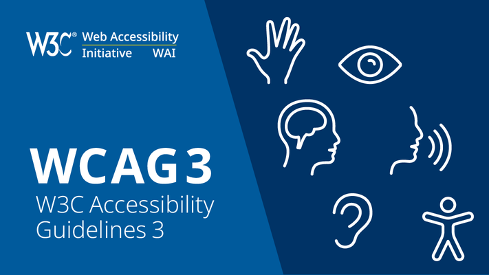

Universellutforming
Universellutforming er en standard som innebærer å til rette legge lik mulighet for alle.
Dette er fordelaktig for et demokrati, og deg som tilbyr en tjeneste.
Gjennom å bruke universellutforming, vil du få tilgang til hele markedet av brukere,
og det vil være enklere for alle å forstå innholdet du presenterer.

Search engine optimization
Search engine optimization handler om å gjøre siden sin attraktiv for søkemotorer,
slik at man havner på førsteside og når flere brukere. Måten man får det til på har forandret
seg stadig gjennom årene, men som en hovedregel er det hvor godt innholdet matcher det brukere
leter etter. Du får en bedre ranking hvis du gjør nettsiden dynamisk responsiv til alle skjermstørrelser,
bruker semantiske tagg riktig, og hvis du i gjennomsnitt greier å holde engasjementet til brukerne
på siden din lenger enn konkurrentene. Det er mange fler faktorer som spiller rolle på din ranking, men brukeropplevelse
vil være den viktigste faktoren til suksess.

Du kan iverksette universellutforming gjennom å følge kravene til WCAG 2.1.
Det stilles krav til at innholdet er dynamisk tilpasset, slik at det kan bli
vist i alle skjermstørrelser, stående og liggende visning, uten at deler av
innholdet går tapt. Du gjør det mulig å programmeringsmessig bestemme skjemaelementer.
Slik at programmer som tar i bruk innholdet, kan for eksempel autofylle brukerens
lagrede innhold, eller presentere det på en annen måte etter behov.
Både tekstlig og
ikke tekstilt innhold skal ha et minimum kontrastforhold på 3:1 mot fargen ved siden
av. Tekstavstanden skal kunne overstyres for å gjøre det enklere å lese. Innhold
som dukker opp uten brukerinput skal ikke plasseres over eksisterende innhold, og det skal
være mulig å lukke det ekstrainnholdet uten å flytte musepekeren.
Hvis man tar i bruk on hover,
skal man kunne lukke ekstrainnholdet gjennom å flytte musepekeren bort, fra innholdet som fikk
det til å dukke opp. Alt innhold skal kunne brukes med enkle pekerklikk, og det skal være brukt
riktig kodede ledetekster, som samsvarer innholdet for å gjøre det mulig å fylle skjemaer med taleinput.
Funksjonalitet som krever bevegelse, skal ha et knapp alternativ for å få til samme funksjon. Tilslutt
skal statusbeskjeder merkes med Aria-attributtet status slik at de leses opp når statusen inntreffer.